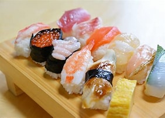
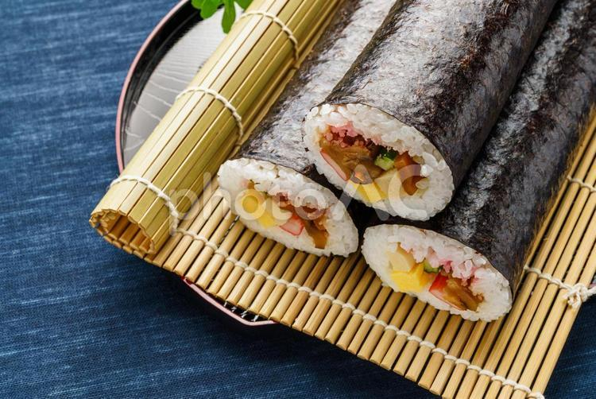

Sushi (寿司)
Sushi is a traditional Japanese dish made with vinegared rice combined with seafood, vegetables, or other ingredients. It comes in different forms such as nigiri and maki rolls. Sushi is known for its use of fresh ingredients and its simple but refined taste. Wikipedia
History of Sushi
Sushi originated as a method of preserving fish in fermented rice in Southeast Asia and was later introduced to Japan. Over time, it developed into a distinct Japanese cuisine. By the Edo period, a form of sushi similar to what is eaten today began to appear in Japan, especially in the form of fresh fish served with vinegared rice.

Types of Sushi

Nigiri (握り)
Hand-pressed rice topped with fish or seafood.
Maki (巻き)
Rice and fillings wrapped in nori seaweed.
Temaki (手巻き)
Hand-rolled cone-shaped sushi.
Chirashi (ちらし)
Bowl of rice topped with assorted sashimi. Japan Food Guide
How to Make Sushi
Learn how sushi is prepared and how it is properly eaten, including the use of soy sauce, wasabi, and pickled ginger.